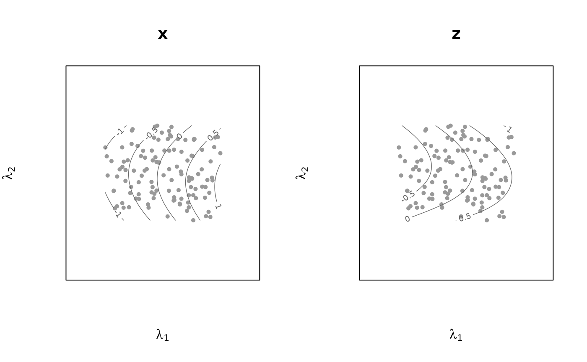
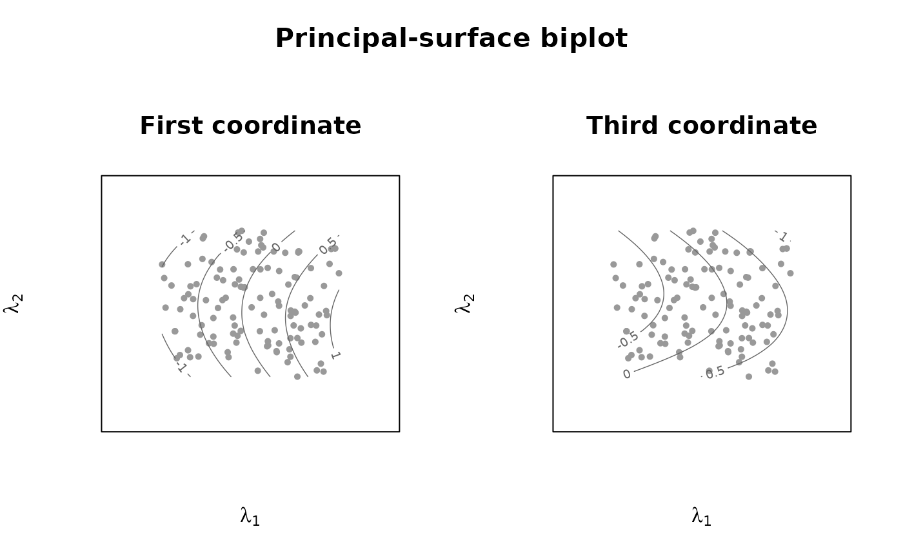
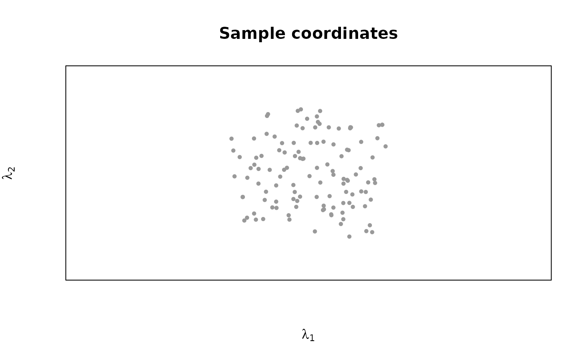

Draws the sample coordinates. If vars is given, draws one panel per
named variable, each showing the sample coordinates together with that
variable's contour lines - the surface's analogue of a biplot axis, read by
interpolating between contour lines rather than by projection onto a single
calibrated axis. With no vars, a single panel of sample coordinates is
drawn with no contours.
Usage
# S3 method for class 'prinsurf'
plot(
x,
vars = NULL,
group = NULL,
col_contour = "grey40",
nlevels = 6,
pch = 16,
cex = 0.7,
asp = 1,
main = NULL,
outer_main = NULL,
...
)Arguments
- x
A
"prinsurf"object.- vars
Variables to contour, one panel each (default: none – a bare scatter of sample coordinates).
- group
Optional factor to colour the sample points.
- col_contour
Colour for the contour lines.
- nlevels
Number of contour levels per panel.
- pch, cex
Point symbol and size for samples.
- asp
Aspect ratio of each panel; the default
1keeps the two surface coordinates on a common scale, so distances in the biplot are comparable in every direction.- main
Panel title(s), replacing the default (the variable's name, or no title when
varsis not given). A single string titles every panel; a vector titles the panels in the order ofvarsand is recycled to that length. Use""for no panel titles.- outer_main
A single title for the figure as a whole, drawn in the outer margin above the panels. Can be combined with
main, which titles the individual panels.- ...
Passed to each panel's initial
plot.
Examples
set.seed(1)
s <- runif(120, -1, 1); t <- runif(120, -1, 1)
X <- cbind(x = s, y = t, z = 0.7 * s + 0.9 * t^2) +
matrix(rnorm(360, 0, 0.03), 120, 3)
fit <- prinsurf(X, max.iter = 6)
## default: each panel is titled with its variable's name
plot(fit, vars = c("x", "z"))

## your own panel titles, and a title for the figure as a whole
plot(fit, vars = c("x", "z"),
main = c("First coordinate", "Third coordinate"),
outer_main = "Principal-surface biplot")

## a title on a single, contour-free panel
plot(fit, main = "Sample coordinates")
